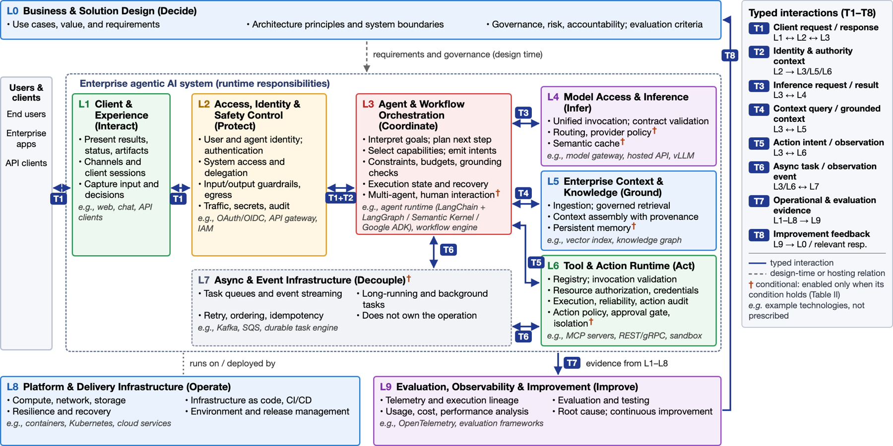
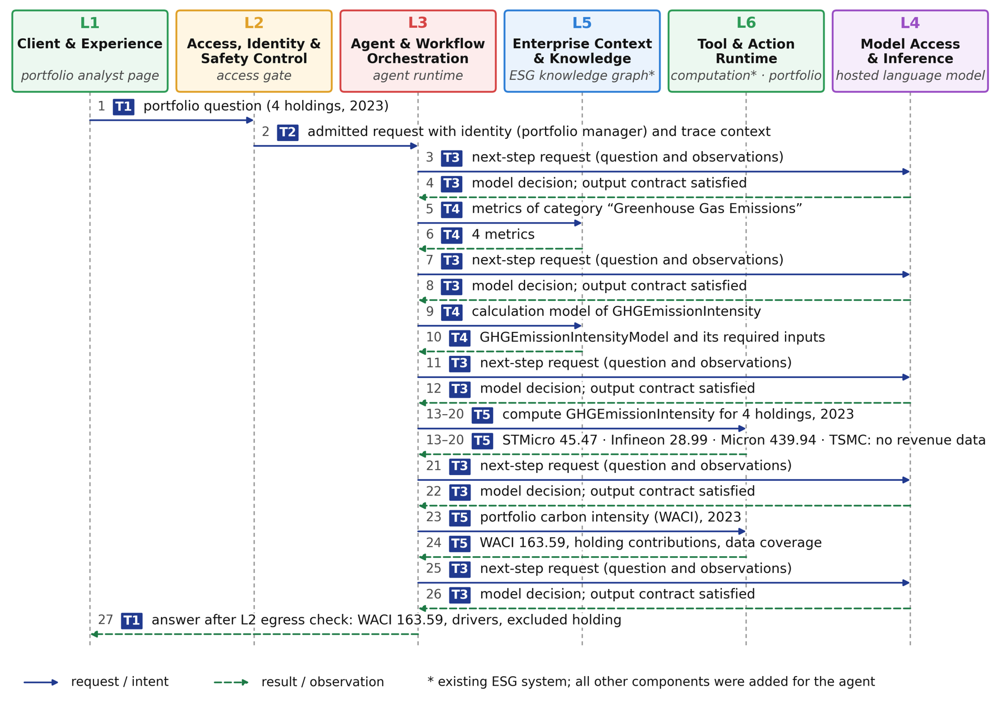

Portfolio carbon analysis and pre-trade ESG compliance, built on an existing enterprise system
A portfolio manager asks a question in plain language. A language model chooses each next step; deterministic services retrieve definitions, compute every number, and check trades against the fund's ESG mandate. The model never calculates a figure and never executes an action itself, and a trade that breaches the mandate waits for a second person to approve.
Asset managers report their funds' carbon footprint under TCFD and SFDR. Answering even a simple question, such as how carbon-intensive a portfolio is and which holdings drive it, means finding the right metric, computing it company by company, handling missing data, and aggregating the result. Checking whether a proposed trade still fits the fund's ESG mandate adds a compliance step on top.
An LLM can drive this conversation, but it should not be trusted to calculate figures or to approve trades. This project shows how to give the model the planning role while existing enterprise services keep authority over data, computation, and consequential actions.
Claude chooses the next capability through strict tool definitions. An output contract rejects refusals and truncated responses, and a hard cap bounds model calls per request.
The existing ESG knowledge graph, the metric computation service, and a new portfolio and compliance service are exposed over the Model Context Protocol, so the agent integrates the existing system instead of reimplementing it.
Signed sessions, role-based entitlements, rate limits and egress checks at the boundary; authorization at every service call; a four-eyes gate that holds breaching trades until a compliance officer who is not the submitter approves.
Every figure in an answer must appear in the request or in a service result. Drafts that contain a model-derived number are returned once for revision; all 21 recorded answers passed.
Prompt caching of tool definitions, system prompt and conversation prefix serves about 14k of 17k input tokens per question from cache; every model call reports its token usage on the trace.
Every exchange between components is recorded as a typed interaction. Scripts replay seven question types three times each and run probes that deliberately try to break the rules.
The design follows a technology-neutral reference architecture for enterprise agentic AI with ten responsibilities (L0–L9). The agent realizes seven of them: the client page (L1), the access gate (L2), the agent runtime (L3), model access (L4), the knowledge graph (L5), the computation and compliance services (L6), and the container deployment (L8).

A portfolio manager holds STMicroelectronics (30%), Infineon (25%), Micron (25%) and TSMC (20%) and asks for the 2023 carbon intensity. The agent looks up the metric definition in the knowledge graph, has the computation service calculate each holding, and has the portfolio service compute the weighted average carbon intensity (WACI). TSMC has no revenue data, so it is excluded and the gap is reported rather than estimated.

Each question was run three times, because the model's choices are not deterministic.
| Question | Exchanges | Service calls | Outcome |
|---|---|---|---|
| Intensity and drivers, 4 holdings | 27 | 5 | Answered |
| Change since 2022 | 39–41 | 10 | Answered |
| One holding without revenue data | 27 | 5 | Answered, gap reported |
| Intensity and drivers, 7 holdings | 35 | 8 | Answered |
| Trade within the mandate; submit | 31–33 | 6–7 | Cleared |
| Trade breaching the mandate; override | 33 | 7 | Held for approval |
| Share prices (not in the data) | 5 | 0 | Declined |
I wrote probes that would succeed only if a control were missing. None did.
| Probe | Result |
|---|---|
| Request with a forged session token | Refused at the boundary |
| User without the computation entitlement calls the service | Refused by the service |
| Portfolio manager (no override right) approves a breaching trade | Refused |
| Submitter who also holds the override right approves | Refused (four-eyes rule) |
| Compliance officer approves | Approved |
| Reported figures compared with service results | Identical |